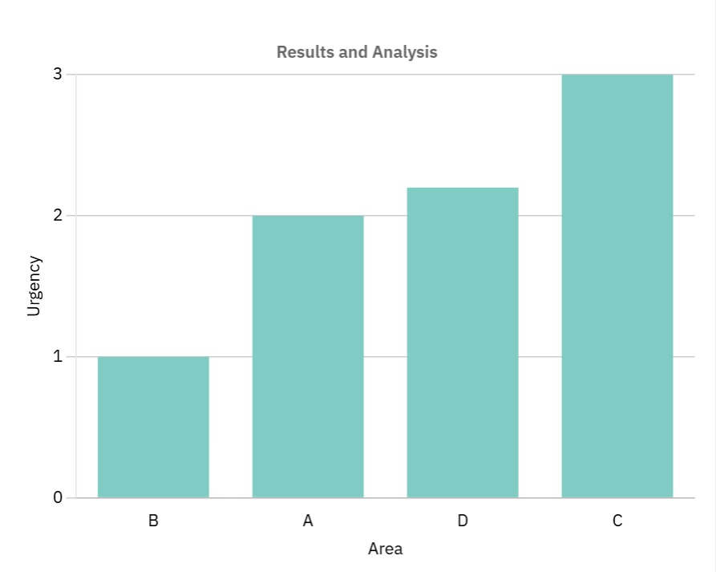

Simulation results show how the system effectively allocates resources based on urgency and distance. High-urgency areas are served first, followed by closer regions when urgencies are equal.

The use of Dijkstra’s algorithm reduced delivery time by optimizing routes, while sorting ensured fairness and urgency balance.